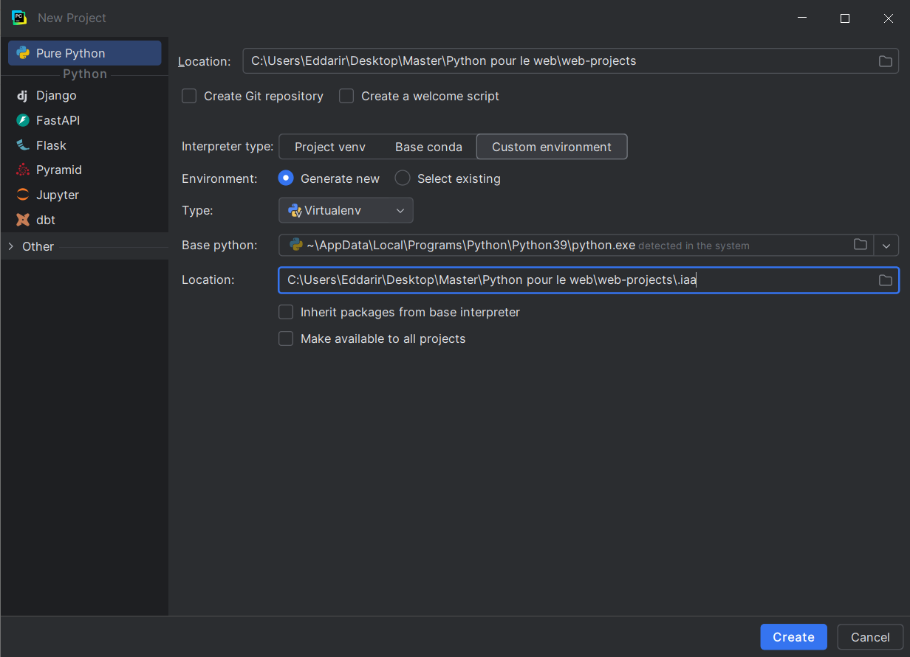

Réalisé par :
Encadré par :
Une application web a été développée et déployée dans le cadre du projet platform_1_iaa pour permettre l’inscription d’étudiants via un formulaire, avec stockage des données dans une base de données PostgreSQL. L’application a été conçue localement sur une machine Windows dans le répertoire C:\Users\Eddarir\Desktop\Master\Python pour le web\web-projects et déployée sur un serveur CentOS 9 à l’adresse IP 192.168.94.133. Les technologies utilisées incluent Django 4.2.23, PostgreSQL 15, psycopg2-binary 2.9.10, Gunicorn, Nginx, et pgAdmin4 9.5. Le contrôle de version a été assuré via Git avec un déploiement automatisé. Les tests locaux et distants ont validé le fonctionnement des interfaces, bien que des défis liés aux dépendances et à la sécurité (mots de passe faibles, absence de SSL) aient été identifiés. Ce projet a permis de renforcer les compétences en développement web, administration système, et gestion de bases de données, tout en soulignant des opportunités d’amélioration, notamment en matière de sécurité et d’évolutivité.
Une application web a été développée pour gérer les inscriptions d’étudiants via un formulaire, avec stockage des données dans une base de données PostgreSQL. Le projet, nommé platform_1_iaa, a été réalisé localement dans le répertoire C:\Users\Eddarir\Desktop\Master\Python pour le web\web-projects sur une machine Windows, puis déployé sur un serveur CentOS 9 à l’adresse IP 192.168.94.133. Les technologies utilisées incluent :
Le choix de Django repose sur sa capacité à accélérer le développement tout en offrant des fonctionnalités sécurisées. PostgreSQL a été préféré à d’autres bases de données pour sa robustesse et sa compatibilité avec Django via psycopg2. Ce rapport détaille la configuration de la base de données, le développement local, le contrôle de version, le déploiement, les tests, ainsi que les défis rencontrés.
Le système a été préparé et les dépendances nécessaires ont été installées sur le serveur CentOS 9 à l’adresse 192.168.94.133 pour répondre aux besoins du projet.
Le système a été mis à jour pour garantir la compatibilité des paquets :
[root@vm-webserver ~]# dnf update -yLes logiciels suivants ont été installés, organisés selon leur rôle fonctionnel :
pip pour la gestion des paquets et venv pour la création d’environnements virtuels.curl pour les requêtes réseau, nano et vim pour l’édition des fichiers de configuration.Développement et contrôle de version :
[root@vm-webserver ~]# dnf install -y gitÉdition et utilitaires réseau :
[root@vm-webserver ~]# dnf install -y curl nano vimEnvironnement Python :
[root@vm-webserver ~]# dnf install -y python3 python3-pipBase de données :
[root@vm-webserver ~]# dnf install -y https://download.postgresql.org/pub/repos/yum/reporpms/EL-9-x86_64/pgdg-redhat-repo-latest.noarch.rpm
[root@vm-webserver ~]# dnf -qy module disable postgresql
[root@vm-webserver ~]# dnf install -y postgresql15 postgresql15-serverServeur web :
[root@vm-webserver ~]# dnf install -y nginx
[root@vm-webserver ~]# systemctl enable nginx
Created symlink /etc/systemd/system/multi-user.target.wants/nginx.service → /usr/lib/systemd/system/nginx.service.
[root@vm-webserver ~]# systemctl start nginxCommandes d’installation sur CentOS 9 :
[root@vm-webserver ~]# dnf install -y python3 python3-pip python3-devel git nginxPour permettre les connexions réseau nécessaires, On a configuré le pare-feu (firewalld) sur le serveur 192.168.94.133 afin d’ouvrir les ports utilisés par les services.
Ports nécessaires :
Commandes pour configurer le pare-feu :
[root@vm-webserver ~]# firewall-cmd --permanent --add-port=80/tcpsuccess
[root@vm-webserver ~]# firewall-cmd --permanent --add-port=5432/tcpsuccess
[root@vm-webserver ~]# firewall-cmd --permanent --add-port=8000/tcpsuccess
[root@vm-webserver ~]# firewall-cmd --permanent --add-port=5050/tcpsuccess
[root@vm-webserver ~]# firewall-cmd --reloadsuccessVérification des ports ouverts :
[root@vm-webserver ~]# firewall-cmd --list-ports
80/tcp 5432/tcp 8000/tcp 5050/tcpNote : Les ports 8000 et 5050 sont utilisés pour des connexions internes (via Nginx comme proxy inverse) et peuvent être restreints à 127.0.0.1 si une sécurité supplémentaire est nécessaire.
La configuration de la base de données PostgreSQL a été effectuée en premier pour permettre son utilisation à la fois localement et à distance.
La base de données PostgreSQL a été initialisée pour configurer le répertoire de données par défaut, puis activée et démarrée le service PostgreSQL :
[root@vm-webserver ~]# /usr/pgsql-15/bin/postgresql-15-setup initdbInitializing database ... OK
[root@vm-webserver ~]# systemctl enable postgresql-15Created symlink /etc/systemd/system/multi-user.target.wants/postgresql-15.service → /usr/lib/systemd/system/postgresql-15.service.
[root@vm-webserver ~]# systemctl start postgresql-15Note : L’initialisation avec postgresql-15-setup initdb doit être effectuée une seule fois avant le premier démarrage du service, si le répertoire de données /var/lib/pgsql/15/data/ n’a pas encore été configuré.
Vérification de l’état du service a été effectué pour confirmer qu’il est actif et en cours d’exécution :
[root@vm-webserver ~]# systemctl status postgresql-15
● postgresql-15.service - PostgreSQL 15 database server
Loaded: loaded (/usr/lib/systemd/system/postgresql-15.service; enabled; preset: disabled)
Active: active (running) since Sat 2025-06-21 19:11:09 +01; 8s ago
Docs: https://www.postgresql.org/docs/15/static/
Main PID: 16675 (postmaster)
Tasks: 7 (limit: 10445)
Memory: 17.6M
CPU: 69ms
CGroup: /system.slice/postgresql-15.service
├─16675 /usr/pgsql-15/bin/postmaster -D /var/lib/pgsql/15/data/
├─16676 "postgres: logger "
├─16677 "postgres: checkpointer "
├─16678 "postgres: background writer "
├─16680 "postgres: walwriter "
├─16681 "postgres: autovacuum launcher "
└─16682 "postgres: logical replication launcher "
Jun 21 19:11:09 vm-webserver systemd[1]: Starting PostgreSQL 15 database server...
Jun 21 19:11:09 vm-webserver postmaster[16675]: 2025-06-21 19:11:09.259 +01 [16675]: LOG: redirecting log output to logging collector process
Jun 21 19:11:09 vm-webserver postmaster[16675]: 2025-06-21 19:11:09.259 +01 [16675]: HINT: Future log output will appear in directory "log".
Jun 21 19:11:09 vm-webserver systemd[1]: Started PostgreSQL 15 database server.Les fichiers /var/lib/pgsql/15/data/postgresql.conf et /var/lib/pgsql/15/data/pg_hba.conf ont été modifiés pour ajuster les paramètres d’écoute et d’authentification.
postgresql.confLe fichier /var/lib/pgsql/15/data/postgresql.conf a été modifié pour écouter sur toutes les interfaces réseau :
[root@vm-webserver ~]# nano /var/lib/pgsql/15/data/postgresql.confContenu pertinent du fichier /var/lib/pgsql/15/data/postgresql.conf :
#------------------------------------------------------------------------------
# CONNECTIONS AND AUTHENTICATION
#------------------------------------------------------------------------------
# - Connection Settings -
listen_addresses = '*' # Écoute sur toutes les interfaces réseau (0.0.0.0)
port = 5432 # Port TCP utilisé par PostgreSQLpg_hba.confLe fichier /var/lib/pgsql/15/data/pg_hba.conf a été modifié pour configurer les méthodes d’authentification et autoriser les connexions depuis le réseau local :
[root@vm-webserver ~]# nano /var/lib/pgsql/15/data/pg_hba.confContenu du fichier /var/lib/pgsql/15/data/pg_hba.conf :
# TYPE DATABASE USER ADDRESS METHOD
# Connexions locales via socket Unix
local all all md5
# Connexions IPv4 locales
host all all 127.0.0.1/32 md5
# Connexions IPv6 locales
host all all ::1/128 md5
# Connexions depuis le réseau local 192.168.94.0/24
host all all 192.168.94.0/24 md5Le service PostgreSQL a été redémarré pour appliquer les modifications :
[root@vm-webserver ~]# systemctl restart postgresql-15L’état du service a été vérifié pour confirmer qu’il est actif et en cours d’exécution :
[root@vm-webserver ~]# systemctl status postgresql-15
● postgresql-15.service - PostgreSQL 15 database server
Loaded: loaded (/usr/lib/systemd/system/postgresql-15.service; enabled; preset: disabled)
Active: active (running) since Wed 2025-06-25 12:15:55 +01; 6s ago
Docs: https://www.postgresql.org/docs/15/static/
Process: 233893 ExecStartPre=/usr/pgsql-15/bin/postgresql-15-check-db-dir ${PGDATA} (code=exited, status=0/SUCCESS)
Main PID: 233899 (postmaster)
Tasks: 8 (limit: 10445)
Memory: 22.3M
CPU: 110ms
CGroup: /system.slice/postgresql-15.service
├─233899 /usr/pgsql-15/bin/postmaster -D /var/lib/pgsql/15/data/
├─233901 "postgres: logger "
├─233902 "postgres: checkpointer "
├─233903 "postgres: background writer "
├─233904 "postgres: walwriter "
├─233905 "postgres: autovacuum launcher "
├─233906 "postgres: logical replication launcher "
└─233911 "postgres: manager platform_1_iaa_db 192.168.94.1(55320) idle"
Jun 25 12:15:55 vm-webserver systemd[1]: Starting PostgreSQL 15 database server...
Jun 25 12:15:55 vm-webserver postmaster[233899]: 2025-06-25 12:15:55.686 +01 [233899] LOG: redirecting log output to logging collector process
Jun 25 12:15:55 vm-webserver postmaster[233899]: 2025-06-25 12:15:55.686 +01 [233899] HINT: Future log output will appear in directory "log".
Jun 25 12:15:55 vm-webserver systemd[1]: Started PostgreSQL 15 database server.Une base de données platform_1_iaa_db a été créée avec un utilisateur manager:
[root@vm-webserver ~]# psql -U postgresCommandes SQL exécutées :
-- Create database:
CREATE DATABASE platform_1_iaa_db;
-- Create user:
CREATE USER manager WITH PASSWORD 'qwerty';
-- Set options for the user:
ALTER ROLE manager SET client_encoding TO 'utf8';
ALTER ROLE manager SET default_transaction_isolation TO 'read committed';
ALTER ROLE manager SET timezone TO 'UTC';
-- Grant privileges:
GRANT ALL PRIVILEGES ON DATABASE platform_1_iaa_db TO manager;
-- Connect to the DB:
\c platform_1_iaa_db
-- Grant schema privileges:
GRANT USAGE, CREATE ON SCHEMA public TO manager;
GRANT ALL ON ALL TABLES IN SCHEMA public TO manager;
ALTER DEFAULT PRIVILEGES IN SCHEMA public GRANT ALL ON TABLES TO manager;
-- Exit:
\qLe développement a été effectué dans le répertoire C:\Users\Eddarir\Desktop\Master\Python pour le web\web-projects à l’aide de PyCharm, configurant l’environnement, le projet Django, l’application, les modèles, les migrations, les formulaires, les vues, les URLs, les templates, et en testant l’application.
Un projet Pure Python a été créé dans PyCharm avec les paramètres suivants :
C:\Users\Eddarir\Desktop\Master\Python pour le web\web-projects.iaa (Virtualenv), situé à l’intérieur du dossier du projet:C:\Users\Eddarir\Desktop\Master\Python pour le web\web-projects\.iaa)
C:\Users\Eddarir\AppData\Local\Programs\Python\Python39\python.exe (Python 3.9.13)PyCharm a automatiquement généré l’arborescence du projet et configuré l’environnement virtuel sans inclure les packages globaux du système.
Figure 1: La figure ci-dessous montre l’écran de configuration de PyCharm lors de la création du projet :
Note : Pour garantir une compatibilité optimale entre l’environnement local et le serveur, il est important d’utiliser des versions cohérentes de Python. Localement, nous utilisons Python 3.9.13 (vérifiable avec python --version). Sur le serveur CentOS 9, la version est Python 3.9.21 (vérifiable avec python3 --version). Ces deux versions appartiennent à la même branche majeure (3.9) et sont compatibles, aucun problème n’ayant été rencontré avec les paquets utilisés, notamment psycopg2-binary ou gunicorn. Il est recommandé de vérifier régulièrement les versions de Python pour éviter des incompatibilités potentielles avec de nouveaux paquets ou des mises à jour.
L’outil pip a été mis à jour pour garantir la compatibilité avec les packages récents :
(.iaa) PS C:\Users\Eddarir\Desktop\Master\Python pour le web\web-projects> python -m pip install --upgrade pipRésultat : Mise à jour de pip de la version 22.3.1 vers 25.1.1.
Les packages suivants ont été installés :
(.iaa) PS C:\Users\Eddarir\Desktop\Master\Python pour le web\web-projects> pip install django pgadmin4 psycopg2-binaryPackages installés :
asgiref, sqlparse, tzdata, Flask, boto3, cryptography, etc.Un fichier requirements.txt a été généré par:
(.iaa) PS C:\Users\Eddarir\Desktop\Master\Python pour le web\web-projects> pip freeze > requirements.txt
pgAdmin4 a été configuré localement afin de gérer la base de données platform_1_iaa_db hébergée sur le serveur 192.168.94.133. Avant de démarrer l’application, le fichier config_local.py, situé dans le répertoire .iaa/Lib/site-packages/pgadmin4/, a été modifié pour personnaliser le comportement de l’environnement d’exécution.
Le contenu du fichier de configuration personnalisé est présenté ci-dessous :
import os
DATA_DIR = os.path.realpath(os.path.expanduser("~/.pgadmin/"))
LOG_FILE = os.path.join(DATA_DIR, "pgadmin4.log")
SQLITE_PATH = os.path.join(DATA_DIR, "pgadmin4.db")
SESSION_DB_PATH = os.path.join(DATA_DIR, "sessions")
STORAGE_DIR = os.path.join(DATA_DIR, "storage")
SERVER_MODE = True
DEFAULT_SERVER = '127.0.0.1'
DEFAULT_SERVER_PORT = 5050
SCRIPT_NAME = '/pgadmin4'
PGADMIN_EXTERNAL_AUTH_SOURCE = NoneCette configuration active le mode serveur de pgAdmin4 sur le port 5050, définit un chemin local pour la base de données SQLite, les fichiers de session et de log, et désactive les sources d’authentification externes.
Après configuration, l’application a été démarrée depuis le terminal PowerShell comme suit :
(.iaa) PS C:\Users\Eddarir\Desktop\Master\Python pour le web\web-projects> cd .iaa/Lib/site-packages/pgadmin4
(.iaa) PS C:\Users\Eddarir\Desktop\Master\Python pour le web\web-projects\.iaa\Lib\site-packages\pgadmin4> python -m pgAdmin4
NOTE: Configuring authentication for SERVER mode.
Enter the email address and password to use for the initial pgAdmin user account:
Email address: django-user@pgadmin.com
Password:
Retype password:
pgAdmin 4 - Application Initialisation
======================================
Starting pgAdmin 4. Please navigate to http://127.0.0.1:5050 in your browser.
* Serving Flask app 'pgadmin'
* Debug mode: offdjango-user@pgadmin.comadminadminL’application est accessible à l’adresse http://127.0.0.1:5050.
Figure 2 : Interface de connexion de pgAdmin4 en local

5050. Elle permet de gérer les connexions aux bases de données PostgreSQL distantes ou locales via une interface web intuitive.
Un projet Django platform_1_iaa et une application etudiants ont été créés :
(.iaa) PS C:\Users\Eddarir\Desktop\Master\Python pour le web\web-projects> django-admin startproject platform_1_iaa
(.iaa) PS C:\Users\Eddarir\Desktop\Master\Python pour le web\web-projects> cd platform_1_iaa
(.iaa) PS C:\Users\Eddarir\Desktop\Master\Python pour le web\web-projects\platform_1_iaa> django-admin startapp etudiantsL’application a été enregistrée dans platform_1_iaa/settings.py :
INSTALLED_APPS = [
'django.contrib.admin',
'django.contrib.auth',
'django.contrib.contenttypes',
'django.contrib.sessions',
'django.contrib.messages',
'django.contrib.staticfiles',
'etudiants',
]Le fichier platform_1_iaa/settings.py a été configuré pour se connecter à la base de données distante platform_1_iaa_db :
DATABASES = {
'default': {
'ENGINE': 'django.db.backends.postgresql',
'NAME': 'platform_1_iaa_db',
'USER': 'manager',
'PASSWORD': 'qwerty',
'HOST': '192.168.94.133',
'PORT': '5432',
}
}Un superutilisateur a été créé pour accéder à l’interface d’administration Django :
(.iaa) PS C:\Users\Eddarir\Desktop\Master\Python pour le web\web-projects\platform_1_iaa> python manage.py createsuperuser
Username (leave blank to use 'eddarir'): django-user
Email address: django-user@admin.com
Password:
Password (again):
Superuser created successfully.Détails du superutilisateur :
django-user django-user@admin.com Un modèle Etudiant a été défini dans etudiants/models.py pour gérer les informations des étudiants :
from django.db import models
class Etudiant(models.Model):
nom = models.CharField(max_length=100)
prenom = models.CharField(max_length=100)
email = models.EmailField(unique=True)
cin = models.CharField(max_length=10, unique=True)
filiere = models.CharField(max_length=100)
date_naissance = models.DateField()
date_inscription = models.DateTimeField(auto_now_add=True)
def __str__(self):
return f"{self.prenom} {self.nom}"Les migrations ont été générées et appliquées pour créer la table etudiants_etudiant dans la base de données :
(.iaa) PS C:\Users\Eddarir\Desktop\Master\Python pour le web\web-projects\platform_1_iaa> python manage.py makemigrations
Migrations for 'etudiants':
etudiants\migrations\0001_initial.py
- Create model Etudiant
(.iaa) PS C:\Users\Eddarir\Desktop\Master\Python pour le web\web-projects\platform_1_iaa> python manage.py migrate
Operations to perform:
Apply all migrations: admin, auth, contenttypes, etudiants, sessions
Running migrations:
Applying contenttypes.0001_initial... OK
Applying auth.0001_initial... OK
Applying admin.0001_initial... OK
Applying admin.0002_logentry_remove_auto_add... OK
Applying admin.0003_logentry_add_action_flag_choices... OK
Applying contenttypes.0002_remove_content_type_name... OK
Applying auth.0002_alter_permission_name_max_length... OK
Applying auth.0003_alter_user_email_max_length... OK
Applying auth.0004_alter_user_username_opts... OK
Applying auth.0005_alter_user_last_login_null... OK
Applying auth.0006_require_contenttypes_0002... OK
Applying auth.0007_alter_validators_add_error_messages... OK
Applying auth.0008_alter_user_username_max_length... OK
Applying auth.0009_alter_user_last_name_max_length... OK
Applying auth.0010_alter_group_name_max_length... OK
Applying auth.0011_update_proxy_permissions... OK
Applying auth.0012_alter_user_first_name_max_length... OK
Applying etudiants.0001_initial... OK
Applying sessions.0001_initial... OKUn formulaire Django basé sur le modèle Etudiant a été défini dans etudiants/forms.py :
from django import forms
from .models import Etudiant
class InscriptionForm(forms.ModelForm):
class Meta:
model = Etudiant
fields = ['nom', 'prenom', 'email', 'cin', 'filiere', 'date_naissance']
widgets = {
'date_naissance': forms.DateInput(attrs={'type': 'date'})
}Deux vues ont été implémentées dans etudiants/views.py :
inscription : Gère l’affichage et la soumission du formulaire d’inscription.confirmation : Affiche une page de confirmation après une inscription réussie.from django.shortcuts import render, redirect
from .forms import InscriptionForm
def inscription(request):
if request.method == 'POST':
form = InscriptionForm(request.POST)
if form.is_valid():
form.save()
return redirect('confirmation')
else:
form = InscriptionForm()
return render(request, 'etudiants/inscription.html', {'form': form})
def confirmation(request):
return render(request, 'etudiants/confirmation.html')Les URLs ont été définies dans etudiants/urls.py :
from django.urls import path
from .views import inscription, confirmation
urlpatterns = [
path('inscription/', inscription, name='inscription'),
path('confirmation/', confirmation, name='confirmation'),
]Et incluses dans platform_1_iaa/urls.py :
from django.contrib import admin
from django.urls import path, include
urlpatterns = [
path('admin/', admin.site.urls),
path('', include('etudiants.urls')),
]Les templates etudiants/templates ont été configurés dans platform_1_iaa/settings.py :
TEMPLATES = [
{
'BACKEND': 'django.template.backends.django.DjangoTemplates',
'DIRS': [os.path.join(BASE_DIR, 'etudiants/templates')],
'APP_DIRS': True,
'OPTIONS': {
'context_processors': [
'django.template.context_processors.debug',
'django.template.context_processors.request',
'django.contrib.auth.context_processors.auth',
'django.contrib.messages.context_processors.messages',
],
},
},
]Les fichiers statiques ont été configurés avec la création automatique du répertoire static :
STATIC_DIR = os.path.join(BASE_DIR, 'static')
if not os.path.exists(STATIC_DIR):
os.makedirs(STATIC_DIR)
STATIC_URL = '/static/'
STATIC_ROOT = os.path.join(BASE_DIR, 'staticfiles')
STATICFILES_DIRS = [
STATIC_DIR
]Le template inscription.html a éte crée pour afficher un formulaire d’inscription stylisé avec Bootstrap :
<!DOCTYPE html>
{% load static %}
<html lang="fr">
<head>
<meta charset="UTF-8">
<title>Formulaire d'inscription</title>
<link rel="stylesheet" href="{% static 'css/bootstrap.min.css' %}">
<style>
.form-wrapper {
background: white;
padding: 2rem;
border-radius: 10px;
box-shadow: 0 0 20px rgba(0,0,0,0.1);
}
.form-label {
font-weight: 500;
}
.form-control {
max-width: 100%;
margin: auto;
}
.btn-primary {
font-weight: 500;
}
</style>
</head>
<body class="bg-light py-5">
<div class="container">
<div class="row justify-content-center">
<div class="col-md-6 form-wrapper">
<h2 class="text-center mb-4">Formulaire d'inscription</h2>
<form method="post" novalidate>
{% csrf_token %}
{% for field in form %}
<div class="mb-3 text-center">
<label class="form-label text-start w-100">{{ field.label }}:</label>
{{ field }}
{% if field.errors %}
<div class="text-danger text-start">{{ field.errors }}</div>
{% endif %}
</div>
{% endfor %}
<div class="d-grid">
<button type="submit" class="btn btn-primary">Envoyer</button>
</div>
</form>
</div>
</div>
</div>
</body>
</html>Le template confirmation.html a éte crée pour afficher une page de confirmation stylisée avec Bootstrap :
<!DOCTYPE html>
{% load static %}
<html lang="fr">
<head>
<meta charset="UTF-8">
<title>Inscription réussie</title>
<link rel="stylesheet" href="{% static 'css/bootstrap.min.css' %}">
</head>
<body class="bg-light py-5">
<div class="container">
<div class="row justify-content-center">
<div class="col-md-6 text-center">
<h2 class="mb-4">Inscription réussie !</h2>
<p>Merci pour votre inscription.</p>
<a href="{% url 'inscription' %}" class="btn btn-primary">Retour au formulaire</a>
</div>
</div>
</div>
</body>
</html>L’application a été testée localement avec :
(.iaa) PS C:\Users\Eddarir\Desktop\Master\Python pour le web\web-projects\platform_1_iaa> python manage.py runserver
Watching for file changes with StatReloader
Performing system checks...
System check identified no issues (0 silenced).
July 09, 2025 - 15:10:32
Django version 4.2.23, using settings 'platform_1_iaa.settings'
Starting development server at http://127.0.0.1:8000/
Quit the server with CTRL-BREAK.Figure 3 : Capture d’écran de l’interface d’administration Django

L’interface d’administration Django, accessible via http://127.0.0.1:8000/admin/, permet la gestion complète des données de l’application.
Figure 4 : Capture d’écran du formulaire d’inscription

Cette image illustre le formulaire d’inscription disponible à l’adresse http://127.0.0.1:8000/inscription/. Le formulaire, stylisé avec Bootstrap, comprend les champs « Nom », « Prénom », « Email », « CIN », « Filière » et « Date de naissance ». Le bouton « Envoyer » est centré. La mise en page responsive est renforcée par une ombre portée et un fond blanc favorisant la lisibilité.
Une fois le formulaire d’inscription dûment rempli et soumis, l’utilisateur est redirigé vers une page de confirmation accessible à l’adresse
http://127.0.0.1:8000/confirmation/.
Figure 5 : Capture d’écran de la page de confirmation
 Cette capture d’écran montre la page de confirmation accessible via
Cette capture d’écran montre la page de confirmation accessible via http://127.0.0.1:8000/confirmation/. Elle affiche un message indiquant que l’inscription a été réalisée avec succès, ainsi qu’un bouton permettant de revenir au formulaire. L’interface est sobre et lisible.
PgAdmin a été re-testé localement après 3 inscriptions avec :
(.iaa) PS C:\Users\Eddarir\Desktop\Master\Python pour le web\web-projects> cd .iaa/Lib/site-packages/pgadmin4
(.iaa) PS C:\Users\Eddarir\Desktop\Master\Python pour le web\web-projects\.iaa\Lib\site-packages\pgadmin4> python -m pgAdmin4
Starting pgAdmin 4. Please navigate to http://127.0.0.1:5050 in your browser.
* Serving Flask app 'pgadmin'
* Debug mode: offFigure 6 : Capture d’écran du PdAgmin après 3 inscriptions
 La capture d’écran montre l'interface du PgAdmin accessible via
La capture d’écran montre l'interface du PgAdmin accessible via http://127.0.0.1:5050/
Interfaces testées :
/admin/ : Interface d’administration Django./inscription/ : Formulaire d’inscription./confirmation/ : Page de confirmation.http://127.0.0.1:5050.Figure 3 : L’interface d’administration Django (/admin/) permet la gestion des données.
Figure 4 : Le formulaire d’inscription (/inscription/) est stylisé avec Bootstrap.
Figure 5 : La page de confirmation (/confirmation/) affiche un message de succès.
Figure 6 : L’interface pgAdmin4 (/pgadmin4/) après connexion.
Les données de trois inscriptions ont été vérifiées dans platform_1_iaa_db via pgAdmin4.
Le contrôle de version Git a été configuré pour gérer le code source, configurant un dépôt distant sur le serveur avec le déploiement automatisé, puis initialisant un dépôt local .
Un groupe git-users et un utilisateur django-user ont été créés pour gérer les opérations Git et Django :
[root@vm-webserver ~]# sudo groupadd git-users
[root@vm-webserver ~]# sudo useradd -m -s /bin/bash -G git-users django-user
[root@vm-webserver ~]# sudo passwd django-userPassant à l’utilisateur django-user pour configurer le dépôt Git distant :
[root@vm-webserver ~]# su - django-user
Last login: Tue Jul 8 16:11:21 +01 2025 from 192.168.94.1 on pts/2Un dépôt bare a été initialisé créant le répertoire web-projects.git pour le dépôt Git et configuré ses permissions :
[django-user@vm-webserver ~]$ mkdir -p /opt/git-repos/django-projects/web-projects.git
[django-user@vm-webserver ~]$ chown -R django-user:git-users /opt/git-repos/django-projects/web-projects.git
[django-user@vm-webserver ~]$ chmod -R 2775 /opt/git-repos/django-projects/web-projects.git
[django-user@vm-webserver ~]$ git init --bare /opt/git-repos/django-projects/web-projects.git
Initialized empty Git repository in /opt/git-repos/django-projects/web-projects.git/Un script post-receive a été configuré pour automatiser le déploiement lors d’un push vers le dépôt distant :
[django-user@vm-webserver ~]$ cd /opt/git-repos/django-projects/web-projects.git
[django-user@vm-webserver web-projects.git]$ nano hooks/post-receive
[django-user@vm-webserver web-projects.git]$ chmod +x hooks/post-receiveContenu du fichier hooks/post-receive :
#!/bin/bash
set -e # Arrêter en cas d'erreur
LOGFILE="/tmp/git-deploy.log"
WORK_TREE="/opt/django-projects/web-projects"
GIT_DIR="/opt/git-repos/django-projects/web-projects.git"
VENV="$WORK_TREE/iaa"
PROJECT_DIR="$WORK_TREE/platform_1_iaa"
DJANGO_MANAGE="$PROJECT_DIR/manage.py"
REQUIREMENTS_FILE="$WORK_TREE/requirements.txt"
echo "=== Deployment started at $(date) ===" >> "$LOGFILE"
mkdir -p "$WORK_TREE"
echo ">> Checkout latest code" >> "$LOGFILE"
git --work-tree="$WORK_TREE" --git-dir="$GIT_DIR" checkout -f >> "$LOGFILE" 2>&1
if [ ! -d "$VENV" ]; then
echo ">> Creating virtual environment" >> "$LOGFILE"
python3 -m venv "$VENV" >> "$LOGFILE" 2>&1
fi
echo ">> Activating virtual environment" >> "$LOGFILE"
source "$VENV/bin/activate"
echo ">> Upgrading pip" >> "$LOGFILE"
pip install --upgrade pip >> "$LOGFILE" 2>&1
if [ -f "$REQUIREMENTS_FILE" ]; then
echo ">> Installing dependencies from requirements.txt + gunicorn" >> "$LOGFILE"
pip install -r "$REQUIREMENTS_FILE" >> "$LOGFILE" 2>&1
pip install gunicorn >> "$LOGFILE" 2>&1
else
echo "!! No requirements.txt found at $REQUIREMENTS_FILE" >> "$LOGFILE"
fi
if [ -f "$DJANGO_MANAGE" ]; then
echo ">> Running Django migrations" >> "$LOGFILE"
python "$DJANGO_MANAGE" migrate --noinput >> "$LOGFILE" 2>&1
echo ">> Collecting static files" >> "$LOGFILE"
python "$DJANGO_MANAGE" collectstatic --noinput >> "$LOGFILE" 2>&1
else
echo "!! manage.py not found at $DJANGO_MANAGE" >> "$LOGFILE"
exit 1
fi
echo ">> Checking if gunicorn service exists" >> "$LOGFILE"
if systemctl list-units --type=service --all | grep -q "gunicorn.service"; then
echo ">> Restarting Gunicorn service" >> "$LOGFILE"
sudo systemctl restart gunicorn >> "$LOGFILE" 2>&1
else
echo "!! Gunicorn service not found, skipping restart" >> "$LOGFILE"
fi
echo " Deployment finished successfully at $(date)" >> "$LOGFILE"Ce script :
/opt/django-projects/web-projects (Si nécessaire)./opt/django-projects/web-projects/iaa (Si nécessaire).pip et installe les dépendances, y compris gunicorn.gunicorn.service si disponible. ./tmp/git-deploy.log.Un dépôt Git a été initialisé localement dans C:\Users\Eddarir\Desktop\Master\Python pour le web\web-projects :
(.iaa) PS C:\Users\Eddarir\Desktop\Master\Python pour le web\web-projects> git init
Reinitialized existing Git repository in C:/Users/Eddarir/Desktop/Master/Python pour le web/web-projects/.git/Un fichier .gitignore a été créé pour exclure les fichiers sensibles :
# Byte-compiled / optimized / DLL files
__pycache__/
*.py[cod]
# Virtual environments
.iaa/
# Django stuff
*.log
*.pot
*.pyc
*.pyo
*.db
*.sqlite3
media/
staticfiles/
# Django secret keys
*.env
.env.*
secrets.json
# IDEs
.vscode/
.idea/
# OS
.DS_Store
Thumbs.db
# Git
*.swpLes fichiers ont été ajoutés au dépôt Git local, avec des avertissements concernant le remplacement des fins de ligne CRLF par LF :
(.iaa) PS C:\Users\Eddarir\Desktop\Master\Python pour le web\web-projects> git add .
warning: in the working copy of '.gitignore', CRLF will be replaced by LF the next time Git touches it
warning: in the working copy of 'platform_1_iaa/etudiants/admin.py', CRLF will be replaced by LF the next time Git touches it
warning: in the working copy of 'platform_1_iaa/etudiants/apps.py', CRLF will be replaced by LF the next time Git touches it
warning: in the working copy of 'platform_1_iaa/etudiants/forms.py', CRLF will be replaced by LF the next time Git touches it
warning: in the working copy of 'platform_1_iaa/etudiants/migrations/0001_initial.py', CRLF will be replaced by LF the next time Git touches it
warning: in the working copy of 'platform_1_iaa/etudiants/models.py', CRLF will be replaced by LF the next time Git touches it
warning: in the working copy of 'platform_1_iaa/etudiants/templates/etudiants/confirmation.html', CRLF will be replaced by LF the next time Git touches it
warning: in the working copy of 'platform_1_iaa/etudiants/templates/etudiants/inscription.html', CRLF will be replaced by LF the next time Git touches it
warning: in the working copy of 'platform_1_iaa/etudiants/tests.py', CRLF will be replaced by LF the next time Git touches it
warning: in the working copy of 'platform_1_iaa/etudiants/urls.py', CRLF will be replaced by LF the next time Git touches it
warning: in the working copy of 'platform_1_iaa/etudiants/views.py', CRLF will be replaced by LF the next time Git touches it
warning: in the working copy of 'platform_1_iaa/manage.py', CRLF will be replaced by LF the next time Git touches it
warning: in the working copy of 'platform_1_iaa/platform_1_iaa/asgi.py', CRLF will be replaced by LF the next time Git touches it
warning: in the working copy of 'platform_1_iaa/platform_1_iaa/settings.py', CRLF will be replaced by LF the next time Git touches it
warning: in the working copy of 'platform_1_iaa/platform_1_iaa/urls.py', CRLF will be replaced by LF the next time Git touches it
warning: in the working copy of 'platform_1_iaa/platform_1_iaa/wsgi.py', CRLF will be replaced by LF the next time Git touches itUn commit initial a été effectué:
(.iaa) PS C:\Users\Eddarir\Desktop\Master\Python pour le web\web-projects> git commit -m "Initiate web-projects"
[master (root-commit) bfca939] Initiate web-projects
22 files changed, 410 insertions(+)
create mode 100644 .gitignore
create mode 100644 platform_1_iaa/__init__.py
create mode 100644 platform_1_iaa/etudiants/__init__.py
create mode 100644 platform_1_iaa/etudiants/admin.py
create mode 100644 platform_1_iaa/etudiants/apps.py
create mode 100644 platform_1_iaa/etudiants/forms.py
create mode 100644 platform_1_iaa/etudiants/migrations/0001_initial.py
create mode 100644 platform_1_iaa/etudiants/migrations/__init__.py
create mode 100644 platform_1_iaa/etudiants/models.py
create mode 100644 platform_1_iaa/etudiants/templates/etudiants/confirmation.html
create mode 100644 platform_1_iaa/etudiants/templates/etudiants/inscription.html
create mode 100644 platform_1_iaa/etudiants/tests.py
create mode 100644 platform_1_iaa/etudiants/urls.py
create mode 100644 platform_1_iaa/etudiants/views.py
create mode 100644 platform_1_iaa/manage.py
create mode 100644 platform_1_iaa/platform_1_iaa/__init__.py
create mode 100644 platform_1_iaa/platform_1_iaa/asgi.py
create mode 100644 platform_1_iaa/platform_1_iaa/settings.py
create mode 100644 platform_1_iaa/platform_1_iaa/urls.py
create mode 100644 platform_1_iaa/platform_1_iaa/wsgi.py
create mode 100644 platform_1_iaa/static/bootstrap.min.css
create mode 100644 requirements.txtLe dépôt distant a été configuré et le code poussé :
(.iaa) PS C:\Users\Eddarir\Desktop\Master\Python pour le web\web-projects> git remote add origin django-user@192.168.94.133:/opt/git-repos/django-projects/web-projects.git
(.iaa) PS C:\Users\Eddarir\Desktop\Master\Python pour le web\web-projects> git remote -v
origin django-user@192.168.94.133:/opt/git-repos/django-projects/web-projects.git (fetch)
origin django-user@192.168.94.133:/opt/git-repos/django-projects/web-projects.git (push)
(.iaa) PS C:\Users\Eddarir\Desktop\Master\Python pour le web\web-projects> git push -u origin master
django-user@192.168.94.133's password:
Enumerating objects: 28, done.
Counting objects: 100% (28/28), done.
Delta compression using up to 4 threads
Compressing objects: 100% (25/25), done.
Writing objects: 100% (28/28), 26.40 KiB | 965.00 KiB/s, done.
Total 28 (delta 1), reused 0 (delta 0), pack-reused 0 (from 0)
To 192.168.94.133:/opt/git-repos/django-projects/web-projects.git
* [new branch] master -> master
branch 'master' set up to track 'origin/master'.
Le déploiement a été effectué avec Gunicorn, pgAdmin4, et Nginx sur le serveur pour rendre l’application accessible.
pgAdmin4 a été installé dans l’environnement virtuel et configuré via config_local.py :
[django-user@vm-webserver web-projects]$ nano iaa/lib/python3.9/site-packages/pgadmin4/config_local.pyContenu de config_local.py :
import os
DATA_DIR = os.path.realpath(os.path.expanduser("~/.pgadmin/"))
LOG_FILE = os.path.join(DATA_DIR, "pgadmin4.log")
SQLITE_PATH = os.path.join(DATA_DIR, "pgadmin4.db")
SESSION_DB_PATH = os.path.join(DATA_DIR, "sessions")
STORAGE_DIR = os.path.join(DATA_DIR, "storage")
SERVER_MODE = True
DEFAULT_SERVER = '127.0.0.1'
DEFAULT_SERVER_PORT = 5050
SCRIPT_NAME = '/pgadmin4'
PGADMIN_EXTERNAL_AUTH_SOURCE = NonepgAdmin4 a été initialisé manuellement pour configurer le compte utilisateur initial :
[django-user@vm-webserver web-projects]$ python iaa/lib/python3.9/site-packages/pgadmin4/pgAdmin4.py
NOTE: Configuring authentication for SERVER mode.
Enter the email address and password to use for the initial pgAdmin user account:
Email address: admin@pgadmin.com
Password:
Retype password:
pgAdmin 4 - Application Initialisation
======================================
Starting pgAdmin 4. Please navigate to http://127.0.0.1:5050 in your browser.
* Serving Flask app 'pgadmin'
* Debug mode: offDétails du compte initial :
admin@pgadmin.com Un service pgadmin.service a été créé :
[root@vm-webserver ~]# nano /etc/systemd/system/pgadmin.serviceContenu de /etc/systemd/system/pgadmin.service :
[Unit]
Description=Gunicorn for pgAdmin4
After=network.target
[Service]
User=django-user
Group=git-users
WorkingDirectory=/opt/django-projects/web-projects/iaa/lib/python3.9/site-packages/pgadmin4
Environment="PATH=/opt/django-projects/web-projects/iaa/bin"
Environment="SCRIPT_NAME=/pgadmin4"
ExecStart=/opt/django-projects/web-projects/iaa/bin/gunicorn --bind 127.0.0.1:5050 pgadmin4.pgAdmin4:app
Restart=always
[Install]
WantedBy=multi-user.targetLe service a été activé et démarré :
[root@vm-webserver ~]# systemctl daemon-reload
[root@vm-webserver ~]# systemctl enable pgadmin
Created symlink /etc/systemd/system/multi-user.target.wants/pgadmin.service → /etc/systemd/system/pgadmin.service.
[root@vm-webserver ~]# systemctl start pgadminVérification de l’état du service PgAdmin :
[root@vm-webserver ~]# systemctl status pgadmin
● pgadmin.service - Gunicorn for pgAdmin4
Loaded: loaded (/etc/systemd/system/pgadmin.service; enabled; preset: disabled)
Active: active (running) since Tue 2025-07-08 19:29:10 +01; 6min ago
Main PID: 245954 (gunicorn)
Tasks: 4 (limit: 10442)
Memory: 168.4M
CPU: 16.696s
CGroup: /system.slice/pgadmin.service
├─245954 /opt/django-projects/web-projects/iaa/bin/python3 /opt/django-projects/web-projects/iaa/bin/gunicorn --bind 127.0.0.1:5050 pgadmin4.>
└─245958 /opt/django-projects/web-projects/iaa/bin/python3 /opt/django-projects/web-projects/iaa/bin/gunicorn --bind 127.0.0.1:5050 pgadmin4.>
Jul 08 19:29:10 vm-webserver systemd[1]: Started Gunicorn for pgAdmin4.
Jul 08 19:29:11 vm-webserver gunicorn[245954]: [2025-07-08 19:29:11 +0100] [245954] [INFO] Starting gunicorn 23.0.0
Jul 08 19:29:11 vm-webserver gunicorn[245954]: [2025-07-08 19:29:11 +0100] [245954] [INFO] Listening at: http://127.0.0.1:5050 (245954)
Jul 08 19:29:11 vm-webserver gunicorn[245954]: [2025-07-08 19:29:11 +0100] [245954] [INFO] Using worker: sync
Jul 08 19:29:11 vm-webserver gunicorn[245954]: [2025-07-08 19:29:11 +0100] [245958] [INFO] Booting worker with pid: 245958Les permissions sudo ont été configurées pour permettre à django-user de redémarrer Gunicorn sans mot de passe :
[django-user@vm-webserver web-projects.git]$ sudo EDITOR=nano visudoAjout dans le fichier /etc/sudoers :
django-user ALL=(ALL) NOPASSWD: /bin/systemctl restart gunicornUn service systemd gunicorn.service a été créé :
[root@vm-webserver ~]# nano /etc/systemd/system/gunicorn.serviceContenu de /etc/systemd/system/gunicorn.service :
[Unit]
Description=Gunicorn instance for Django Project
After=network.target
[Service]
User=django-user
Group=git-users
WorkingDirectory=/opt/django-projects/web-projects/platform_1_iaa
Environment="PATH=/opt/django-projects/web-projects/iaa/bin"
ExecStart=/opt/django-projects/web-projects/iaa/bin/gunicorn \
--workers 3 \
--bind 127.0.0.1:8000 \
--access-logfile /var/log/django/access.log \
--error-logfile /var/log/django/error.log \
platform_1_iaa.wsgi:application
Restart=always
[Install]
WantedBy=multi-user.targetLe service a été activé et démarré :
[root@vm-webserver ~]# systemctl enable gunicorn
Created symlink /etc/systemd/system/multi-user.target.wants/gunicorn.service → /etc/systemd/system/gunicorn.service.
[root@vm-webserver ~]# systemctl daemon-reload
[root@vm-webserver ~]# systemctl start gunicornVérification de l’état du service Gunicorn :
[root@vm-webserver ~]# systemctl status gunicorn
● gunicorn.service - Gunicorn instance for Django Project
Loaded: loaded (/etc/systemd/system/gunicorn.service; enabled; preset: disabled)
Active: active (running) since Tue 2025-07-08 20:03:56 +01; 9min ago
Main PID: 254680 (gunicorn)
Tasks: 4 (limit: 10442)
Memory: 107.0M
CPU: 2.699s
CGroup: /system.slice/gunicorn.service
├─254680 /opt/django-projects/web-projects/iaa/bin/python3 /opt/django-projects/web-projects/iaa/bin/gunicorn --workers 3 --bind 127.0.0.1:8000 --access-logfile /var/log/django/access.log --error-logfile /var/log/django/error.log platform_1_iaa.wsgi:application
├─254681 /opt/django-projects/web-projects/iaa/bin/python3 /opt/django-projects/web-projects/iaa/bin/gunicorn --workers 3 --bind 127.0.0.1:8000 --access-logfile /var/log/django/access.log --error-logfile /var/log/django/error.log platform_1_iaa.wsgi:application
├─254682 /opt/django-projects/web-projects/iaa/bin/python3 /opt/django-projects/web-projects/iaa/bin/gunicorn --workers 3 --bind 127.0.0.1:8000 --access-logfile /var/log/django/access.log --error-logfile /var/log/django/error.log platform_1_iaa.wsgi:application
└─254683 /opt/django-projects/web-projects/iaa/bin/python3 /opt/django-projects/web-projects/iaa/bin/gunicorn --workers 3 --bind 127.0.0.1:8000 --access-logfile /var/log/django/access.log --error-logfile /var/log/django/error.log platform_1_iaa.wsgi:application
Jul 08 20:03:56 vm-webserver systemd[1]: Started Gunicorn instance for Django Project.Nginx a été configuré comme proxy inverse pour servir l’application Django via Gunicorn et pgAdmin4, ainsi que pour gérer les fichiers statiques, en tant que dernière étape côté serveur :
[root@vm-webserver ~]# nano /etc/nginx/conf.d/site.confContenu de /etc/nginx/conf.d/site.conf :
server {
listen 80 default_server;
server_name 192.168.94.133;
location / {
proxy_pass http://127.0.0.1:8000;
proxy_set_header Host $host;
proxy_set_header X-Real-IP $remote_addr;
proxy_set_header X-Forwarded-For $proxy_add_x_forwarded_for;
}
location /static/ {
alias /opt/django-projects/web-projects/platform_1_iaa/staticfiles/;
}
location /pgadmin4/ {
proxy_pass http://127.0.0.1:5050;
proxy_set_header Host $host;
proxy_set_header X-Real-IP $remote_addr;
proxy_set_header X-Script-Name /pgadmin4;
proxy_set_header X-Forwarded-For $proxy_add_x_forwarded_for;
}
}Ce fichier configure Nginx pour :
192.168.94.133./ à Gunicorn (http://127.0.0.1:8000)./opt/django-projects/web-projects/platform_1_iaa/staticfiles/./pgadmin4/ à pgAdmin4 (http://127.0.0.1:5050) avec X-Script-Name /pgadmin4.La configuration a été validée et Nginx redémarré :
[root@vm-webserver ~]# nginx -t
nginx: the configuration file /etc/nginx/nginx.conf syntax is ok
nginx: configuration file /etc/nginx/nginx.conf test is successful
[root@vm-webserver ~]# systemctl reload nginxVérification de l’état du service Nginx :
[root@vm-webserver ~]# systemctl status nginx
● nginx.service - The nginx HTTP and reverse proxy server
Loaded: loaded (/usr/lib/systemd/system/nginx.service; enabled; preset: disabled)
Active: active (running) since Sun 2025-07-06 22:02:42 +01; 1 day 22h ago
Process: 266007 ExecReload=/usr/sbin/nginx -s reload (code=exited, status=0/SUCCESS)
Main PID: 1003 (nginx)
Tasks: 3 (limit: 10442)
Memory: 4.1M
CPU: 18.686s
CGroup: /system.slice/nginx.service
├─ 1003 "nginx: master process /usr/sbin/nginx"
├─266008 "nginx: worker process"
└─266009 "nginx: worker process"
Jul 08 20:52:09 vm-webserver systemd[1]: Reloading The nginx HTTP and reverse proxy server...
Jul 08 20:52:09 vm-webserver systemd[1]: Reloaded The nginx HTTP and reverse proxy server.Ces tests visaient à valider la disponibilité, le bon fonctionnement ainsi que la cohérence des interfaces principales en environnement distant.
Figure 7 : Capture d’écran de l’interface d’administration Django distante

L’interface d’administration Django, accessible via http://192.168.94.133/admin/, a été testée avec un compte superutilisateur, confirmant la gestion efficace des données à distance.
Figure 8 : Capture d’écran du formulaire d’inscription distant

Le formulaire d’inscription distant, accessible via http://192.168.94.133/inscription/, présente une interface intuitive et responsive conforme à la version locale.
Figure 9 : Page de confirmation d’inscription distante — validation réussie

La page de confirmation distante, accessible via http://192.168.94.133/confirmation/, confirme que l’inscription a été réalisée avec succès. Cette interface conserve la sobriété et la lisibilité de la version locale, assurant une expérience utilisateur cohérente.
Figure 10 : Capture d’écran de l’interface pgAdmin4 distante

L’interface pgAdmin4, accessible via http://192.168.94.133/pgadmin4/, a permis de vérifier la connexion et la gestion de la base de données à distance, avec une interface identique à la version locale.
Les tests distants ont été effectués sur l’application déployée sur le serveur accessible via l’adresse IP 192.168.94.133, en accédant aux URLs suivantes :
http://192.168.94.133/inscription/ : Formulaire d’inscription des étudiants.http://192.168.94.133/admin/ : Interface d’administration Django.http://192.168.94.133/pgadmin4/ : Interface pgAdmin4 pour la gestion de la base de données.Cas de test :
/confirmation/, données enregistrées.platform_1_iaa_db, vérification des enregistrements.Résultats :
/var/log/django/access.log, /var/log/django/error.log, et /tmp/git-deploy.log ont confirmé les opérations réussies.
Figure 7 : L’interface d’administration Django (/admin/) est fonctionnelle.
Figure 8 : Le formulaire d’inscription distant est responsive.
Figure 9 : La page de confirmation affiche un message de succès.
Figure 10 : L’interface pgAdmin4 (/pgadmin4/) permet la gestion à distance.
post-receive ont été corrigées en ajustant les permissions avec chmod et chown.qwerty, adminadmin) sont faibles et doivent être renforcés. L’accès à pgAdmin4 n’est pas restreint aux IPs de confiance.Ce projet a permis de concevoir, développer et déployer une application web robuste pour la gestion des inscriptions d’étudiants,
en utilisant des technologies modernes et des pratiques standardisées. L’utilisation de Django a facilité la création d’une interface utilisateur intuitive et sécurisée, tandis que
PostgreSQL a assuré une gestion fiable des données.
Le déploiement sur un serveur CentOS 9 avec Gunicorn et Nginx a garanti des performances optimales et une accessibilité réseau.
L’intégration de Git pour le contrôle de version et l’automatisation du déploiement a renforcé l’efficacité du workflow. Ce projet a également permis d’approfondir
des compétences en développement full-stack, gestion de bases de données, administration système, et sécurité des applications web.